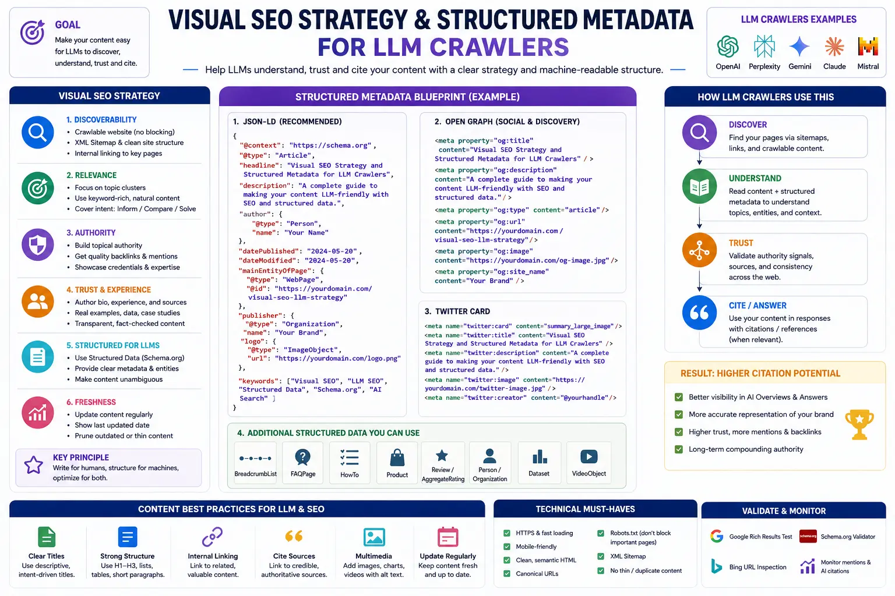
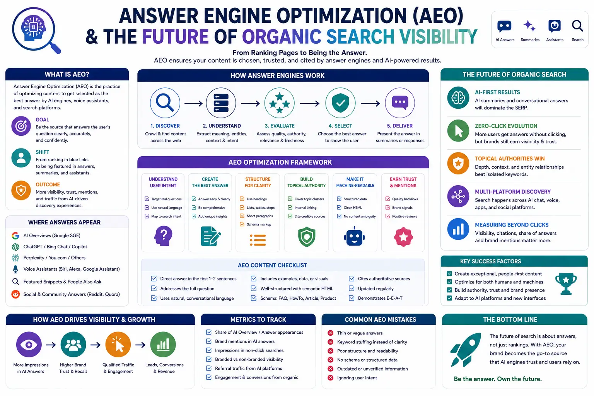

How to Optimize Your Personal Brand Vector Graph for Generative AI Search Engine Citations
The Shift from Web Pages to Entity Vectors
The transition from traditional web indexing to the era of large language models (LLMs) has fundamentally altered the mechanics of digital visibility. For decades, founders, senior leaders, and high-profile figures managed their public profiles by focusing on traditional Search Engine Optimization (SEO)—optimising web page copy, earning backlinks, and ranking in the standard "ten blue links" of Google. However, in 2026, the search paradigm has moved from document indexing to entity-based retrieval. Today, users search using conversational, generative engines such as ChatGPT, Perplexity, and Gemini. When a user asks an AI model about your industry’s key experts or seeks a summary of your professional achievements, the engine does not merely pull a page; it query-maps a vector database. To remain discoverable and authoritative, you must shift your focus to Generative Engine Optimization (GEO) for Executives and actively optimize your personal brand vector graph.
In this context, your online presence is no longer just a collection of links. It is a multidimensional mathematical entity—a vector—plotted within the high-dimensional embedding space of generative models. This vector is defined by its nodes (representing your company affiliations, publications, key milestones, speaking engagements, and written content) and the edges (the relationships) connecting them. Optimising this entity requires a technical, data-driven approach, starting with a meticulous Personal Brand Audit. A Personal Brand Audit is the fundamental diagnostic step that reveals how search engines and LLM crawlers perceive your profile, identity, and expertise. By establishing a solid foundation, executives can align their digital footprint with the requirements of answer engine optimization, ensuring they are selected as the definitive source when search models synthesise responses to high-level queries.
Demystifying the Personal Brand Vector Graph
To understand why optimizing your personal brand is critical for AI citations, one must understand how large language models store and retrieve information. Unlike traditional search databases that index keywords on a page, generative engines convert all processed data into high-dimensional numerical vectors. Entities that are semantically related are plotted close to one another in this vector space. Your personal brand vector graph is the mathematical model of your professional identity. It is constructed from a network of nodes, including your LinkedIn profile, corporate bio, press features, academic papers, and digital assets.
If this vector graph is fragmented, search engines struggle to resolve your entity. For example, if your name is spelled differently across various publications, or if your corporate affiliations are outdated, the model perceives these as separate entities, diluting your overall authority. This is why Generative Engine Optimization (GEO) for Executives has emerged as a distinct discipline. It focuses on consolidating these disparate nodes into a cohesive, highly dense vector representation. By aligning all digital assets, you ensure that the AI model can resolve your name to a single, high-trust node. This consolidation directly impacts your performance in answer engine optimization. When an answer engine needs to synthesize a response about a specific industry trend, it searches for the most authoritative, coherent entity vector related to that topic. An optimized vector graph ensures that your profile stands out, increasing the likelihood that the model will cite your articles or insights.
The AI Audit: Evaluating Your Entity Indexing
Before deploying technical optimizations, you must diagnose the current state of your digital footprint. Knowing How to audit your personal brand for the age of generative search requires a structured methodology that differs from traditional SEO audits. Instead of analyzing keyword rankings or backlink profiles, you must analyze how major LLMs interpret your entity. This involves querying models like ChatGPT, Claude, Perplexity, and Gemini with specific prompts designed to test entity resolution. For instance, asking "Who is [Your Name] and what are their primary contributions to [Industry]?" allows you to see if the AI accurately synthesizes your background or confuses you with someone else.
If the search results reveal entity fragmentation, name collisions, or outdated associations, you must implement robust digital footprint cleanup frameworks. These frameworks are step-by-step procedures designed to standardize your name variations, remove obsolete profiles, and correct factual errors on authoritative third-party directories like Wikidata, Crunchbase, and corporate websites. A key element of How to audit your personal brand is identifying where the AI is retrieving its data. Since LLMs cite their sources, analyzing these citations helps you identify which platforms are acting as the primary anchors for your vector representation.
Furthermore, a comprehensive audit includes tracking name velocity online. This metric measures the frequency, speed, and contextual diversity with which your name is mentioned across digital platforms. Models track this velocity to gauge an entity's current relevance and authority. By monitoring these signals, you can adjust your PR, content, and publishing schedules to maintain a steady stream of high-quality citations, reinforcing your brand's vector density. Without a clear understanding of How to audit your personal brand, any subsequent optimization efforts will be unfocused, risking further entity confusion. Without a structured Personal Brand Audit, executives risk leaving their AI representation to chance.
Executive GEO Alignment
By implementing Generative Engine Optimization (GEO) for Executives, leaders can ensure that their online presence, achievements, and insights are accurately represented and cited within AI-driven search models.
AI Citation Penetration
Securing high visibility across ChatGPT, Perplexity, and Gemini through advanced answer engine optimization methodologies that structure thought leadership into clear, extractable facts.
Entity Resolution Security
Starting with a technical Personal Brand Audit to resolve entity conflicts, name collisions, and fragmented data nodes, creating a single, authoritative source of truth.
Algorithmic Compliance
Aligning all visual, textual, and audio assets with personal branding data compliance controls, securing intellectual property rights while remaining open to authorized AI crawlers.

Structured Metadata Deployment: Establishing Algorithmic Trust
Once you have mapped your digital footprint and identified the gaps in your vector graph, the next phase is technical optimization. This is where structured metadata deployment for individuals becomes essential. LLM crawlers are probabilistic systems; they make educated guesses based on the text they ingest. By implementing structured schema markup, you provide these crawlers with explicit, machine-readable facts that leave no room for ambiguity. This metadata acts as the definitive source of truth, helping search engines resolve your entity with high confidence.
The foundation of structured metadata deployment for individuals is the Person schema. This JSON-LD markup should be embedded in your personal website and corporate bio page, declaring your full name, official titles, company affiliations, education, social profiles, and notable achievements. You should also leverage the `sameAs` property to link your website to authoritative database entries like your Wikidata profile, LinkedIn page, and Crunchbase entry. This explicit linking tells the crawler that all these profiles belong to the same physical entity, merging their vector nodes and increasing your overall domain authority. Our agency designs custom systems for structured metadata deployment for individuals, integrating JSON-LD schema across personal portfolios.
This structured layer is the driving force behind successful answer engine optimization. When a generative engine attempts to answer a specific question, it scans for structured data that can verify the relationships between entities. If your website has deployed clean, validated schema, the AI can effortlessly verify your expertise and output a direct, cited answer. By aligning your personal brand with answer engine optimization principles, you position your content as the definitive answer.
Additionally, you must ensure that all schema deployments align with personal branding data compliance standards. This involves managing how your structured data is scraped, stored, and utilized by AI models. Implementing clear crawler policies in your robots.txt file and ensuring that your personal data is presented in a way that complies with regional privacy regulations (like GDPR and CCPA) is critical. By maintaining strict personal branding data compliance, you protect your intellectual property while ensuring that authorized models can easily access and cite your verified achievements.
Corporate Media Asset Governance: Optimizing Multi-Modal Assets
In 2026, generative AI search is no longer purely textual. Models are increasingly multi-modal, meaning they process images, video clips, and audio files alongside text. If you want your headshots, presentation slides, and video interviews to appear in search results, you must implement a comprehensive system for Corporate Media Asset Governance. This practice involves the systematic management, structuring, and compliance tracking of all visual and audio assets associated with an executive and their enterprise.
Poor media governance leads to entity fragmentation. For example, if a search crawler indexes an executive's photo on a news site but cannot associate the face or filename with the official Person schema, that asset remains unlinked in the vector graph. Implementing robust Corporate Media Asset Governance ensures that all images and video files have matching metadata. By implementing Corporate Media Asset Governance, you ensure that every image is optimized with descriptive, keyword-rich filenames and detailed alt-text. More importantly, you must wrap these media assets in JSON-LD ImageObject and VideoObject schemas, explicitly linking the asset creator and subject back to the executive's Person schema. With proper Corporate Media Asset Governance, a company can prevent LLM crawlers from misattributing senior management's media assets.
Proper asset governance also plays a role in personal branding data compliance. As copyright laws and data scraping regulations become stricter, having clear licensing metadata embedded in your media assets protects them from unauthorized use. It also signals to search crawlers that the media is authorized for indexing and citation, increasing the probability of your visual assets appearing in rich AI summaries and search panels. Without robust Corporate Media Asset Governance, your multi-modal assets remain invisible to AI crawlers, severely limiting the breadth of your personal brand vector graph.
Perplexity AI & Citation Sourcing
- Focuses heavily on raw web scrapers, dynamic search queries, and citation-friendly indexing.
- Requires clear, direct answers in paragraph structures that can be easily extracted and attributed.
- Relies on third-party knowledge bases and high-trust media profiles to verify real-time insights.
- Benefited by regular updates, helping leaders by tracking name velocity online dynamically.
Google Gemini & SGE Integration
- Integrates directly with Google's main Knowledge Graph and LocalBusiness entity structures.
- Prioritizes Verified profiles, consistent NAP (Name, Address, Phone) citations, and verified corporate media.
- Requires robust Corporate Media Asset Governance to resolve multi-modal assets with official schemas.
- Highly influenced by Person schema data and trusted corporate associations across the Google ecosystem.
ChatGPT & Multi-Modal Visibility
- Utilizes advanced visual search and neural web browsing to find and cite authority sources.
- Demands detailed structured metadata deployment for individuals, including ImageObject and Person schemas.
- Uses advanced entity matching to group social profiles, articles, and companies under a single node.
- Prioritizes secure, licensed, and compliant sources in accordance with personal branding data compliance.

The Strategic Path Forward: Executing Footprint Governance
Optimising your personal brand vector graph is not a one-time task; it is an ongoing process of governance and monitoring. Executives must establish long-term digital footprint cleanup frameworks to ensure their profiles remain accurate as their careers evolve. As you acquire new positions, board seats, publications, and awards, your vector graph must be updated across all authoritative nodes simultaneously. Failure to do so creates semantic inconsistencies, which AI models penalize by reducing citation frequency. Applying structured digital footprint cleanup frameworks allows executives to purge obsolete or inaccurate data from the web.
Moreover, tracking name velocity online should be integrated into your monthly performance reviews. If your name velocity drops, it signals to generative models that your influence is waning, leading to a decay in vector proximity for key industry terms. By consistently publishing thought leadership articles, appearing on high-authority podcasts, and engaging in speaking opportunities, you maintain the velocity required to keep your entity active in LLM memory. A modern GEO dashboard includes tracking name velocity online to ensure search models update their vector representations in real time.
Each of these activities must be supported by structured metadata deployment for individuals to ensure that new achievements are immediately parsed and linked to your primary node. By maintaining this structured loop—auditing, cleaning, structuring, and monitoring—executives can ensure they remain at the forefront of AI-driven search results. When executives ask How to audit your personal brand, we guide them through semantic distance mapping and profile evaluation.
Finally, you must keep a close eye on the legal landscape of personal branding data compliance. As generative search models evolve, they will rely more heavily on licensed, verified, and structured data sources. Executives who have proactively secured their digital entities and structured their media assets will be uniquely positioned to dominate these new channels.
Conclusion: Dominating the Era of Conversational Search
The age of traditional keyword search is yielding to the era of semantic, vector-based AI retrieval. To maintain influence and visibility, executives and founders must treat their digital footprints as structured, machine-readable datasets. Optimizing your personal brand vector graph through a continuous Personal Brand Audit, structured metadata deployment, and multi-modal asset optimization is no longer optional—it is the prerequisite for organic visibility.
At The PhD Ads in Madurai, we specialize in helping senior leaders navigate this paradigm shift. We deploy custom digital footprint cleanup frameworks, manage Corporate Media Asset Governance, and implement advanced Generative Engine Optimization (GEO) for Executives. Our team ensures that your personal brand is structured, compliant, and optimized for the algorithms of tomorrow. By focusing on answer engine optimization, we position your thought leadership as the definitive answer, securing the high-value citations your brand deserves. Contact us at team@e2o.in to future-proof your digital legacy.
Key Topics
Ready to Optimize Your Personal Brand for the Age of AI Search?
At The PhD Ads in Madurai, we specialize in high-impact personal branding solutions tailored for the AI search landscape. We help senior leaders, founders, and enterprises build optimized vector graphs, deploy structured schema data, establish media asset governance, and win citations across ChatGPT, Perplexity, and Google Gemini.
Email: team@e2o.in